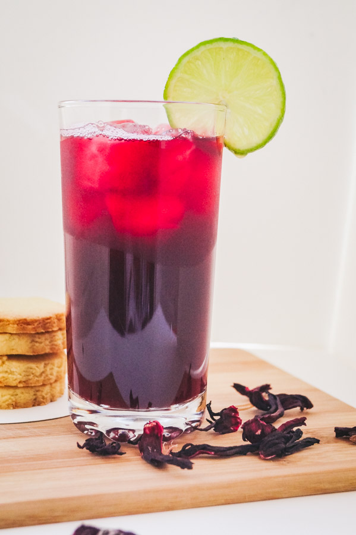

Zobo

Description
Zobo (Hibiscus) as it popularly called in Nigeria is a refreshing and tasty drink made out of Zobo leaves. It is also easy to make
Ingredients
- 50g Zobo leaves
- 1 Pineapple cut into chunks
- 1 Orange cut into segments
- 6 pieces Cloves
- Ginger 2-3 cube sizes
- Sugar (optional)
Steps
- Rinse zobo leaves clean to get rid of dirt.
- Place zobo leaves and all other ingredients excluding the sugar into a pan and bring to boil for 15minutes.
If you will be adding sugar or any other sweetener to the zobo, do it while the mixture is still hot.
- Leave zobo to steep for about 2-4 hours depending on how much time you have got.
- Strain the content through the tiniest sieve you have to get rid of any settlements.
- Leave zobo to cool and serve chilled or with ice. Garnish with lemon or lime